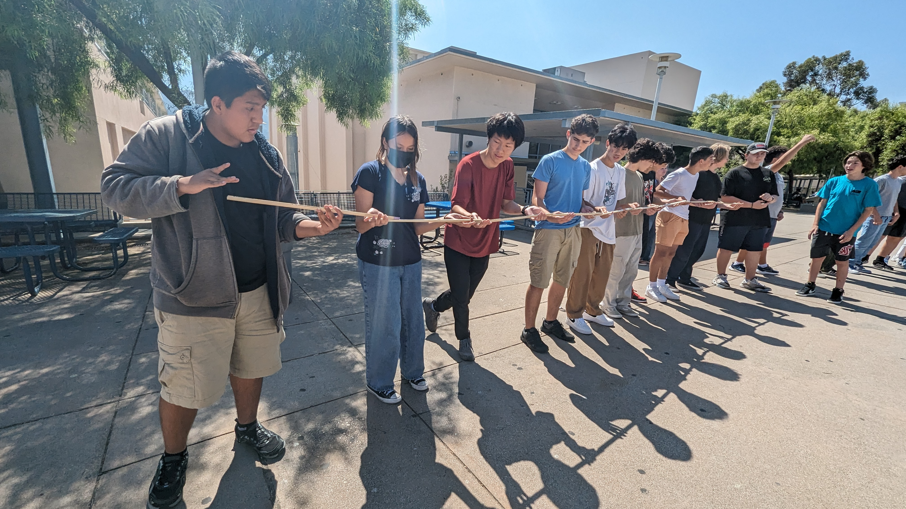
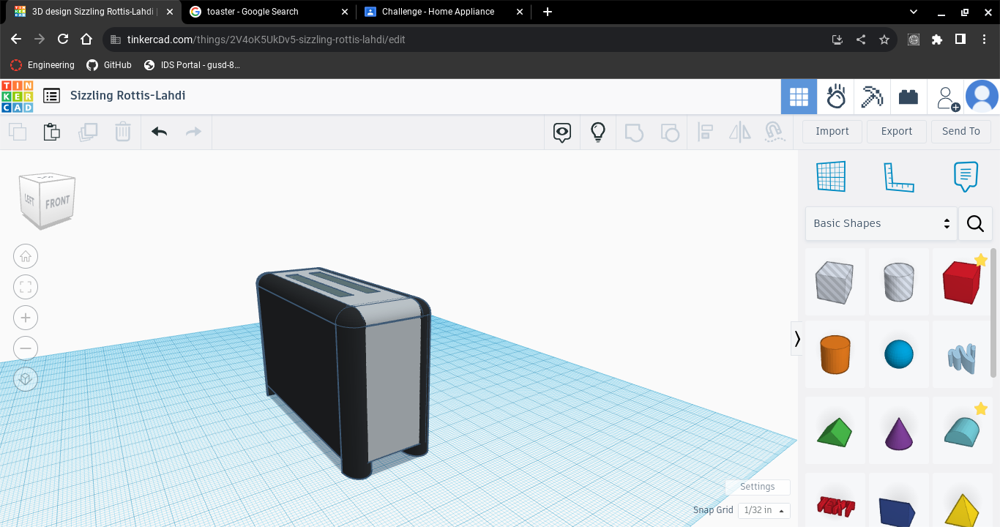
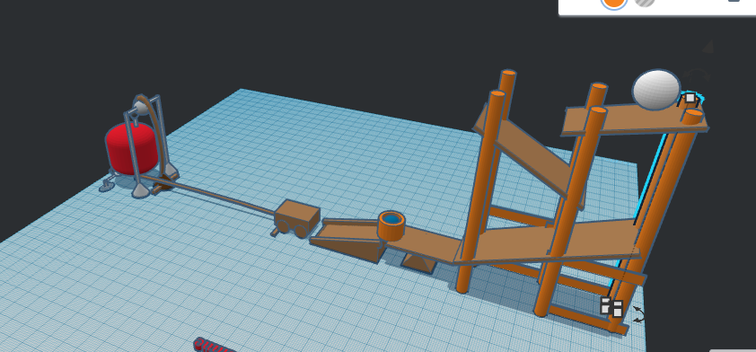

This week we went over 2 presentations. One of them was about Saftey in the classroom. The second one was about the engineering process. The engineering prcoess presentation taught me how engineering work/the steps of it.
Another thing we did was a challenge where we got a marble into a cup using pipes. The challenge was fun and actually challenging. It was difficult to coordinate ourselfs at first but got better as we went along and finally we got the marble in the cup.
This weekend will be fun, it was my birthday on the 24th and I'm gonna celebrate it on Saturday with my family.
My Favorite Food
This week we learned about mechanical engineering and the different parts of it. As groups we also started designing our own Rube Goldberg machines that we will later make. We didn't do much, we made a simple sketch and made a list of our materials.
For this weeks challenege, we use Tinkercad to design a home appliance. I made a toaster, I didn't finish it because I was trying to make complex shapes manually that they probally has presets of that I didn't bother to find.


My week went well, it was nice having Monday off and overall it was a easy week. This week we learned how to use Tinkercad more and we designed and started making our Rube Goldberg machines. My groups Rube Goldberg machine will will start with the baseball rolling down a few slides which then will land on a lever which will flip a cup, The cup will then push a car which will trigger a pully that drops a neddle on a ballon which will pop it. The most challenging part of our machine will probaly be getting the pully to work and actually pop the balloon. It just seems like the most complex part of our machine. 